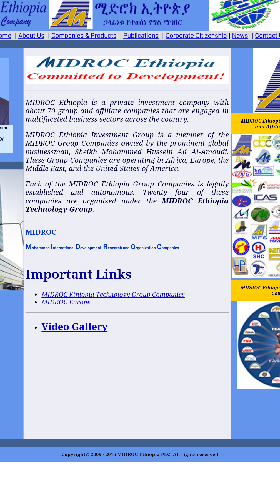

Visitor Analysis and Persona
Skype | Free calls to friends and family or Skype.com
URL:https://www.skype.com/en/
Skype is easy to use for everyone but the group age who uses it the most is young adults (18-34). Anyone can use the skype wherever if they have internet access. It is easy to figure out.
The site was satisfying the needs of the visitors. The visitors wanted to connect with friends and families via phone calls, video calls, instant messaging, and, audio calls. It is free and handy.
The content is organized in a really an easy and accessible way. The visitors, all they have to do is sign in or Download Skype. The alignment is perfect and attractive to the audience.
It is easy to navigate, there are engaging images, good alignment. It’s very simple to figure out and get what the visitor want. It is accessible because with mobile site, the visitors can connect with friends and families wherever they are. Skype facilitate people in a mobile environment. It was handy to use their mobile phone and in video or audio. The visitor was wanting to be connected or skyped his or her friends and families, so it was manageable and doable.
Visitor Analysis
Skype is easy to use for everyone and anywhere. It is mostly used by young adults (18-34). It’s so easy to use anyone can figure it out. Skype users are families, college kids, and high school kids. Using skype doesn’t require a lot education. At the same time the more educated people tend to use it more often. The number of skype users in developed Countries are more than developing Countries. It shows that more educated and people with more income increase the use of the site. The family status doesn’t limit and determine the users. Yes, they purpose of skype is to connect families and friends. Families and friends use it a lot.
When a visitors visit the site, they are looking for an essay way to connect with people. Skype provide that for free. As long as the visitor has network connection, the location doesn’t limit use of the site. People use skype twenty four hours for video conferences and personal uses. It is used in any electronics devices including phones, laptop and desktop computers.
Visitor Analysis of bad site
The site donesnt adjust from computer to mobile desktop. it stays the samme unless i scroll in and out.The site I visited doesn’t really show the contents. They didn’t know who their target audience was. Their website doesn’t have responsive meaning it adapts to the users screen size allowing a seamless experience alternative have a mobile version of your site created. They didn’t meet the needs of their target audience. The website is not easy to navigate and clearly layout. Contents are not aligned and organized how it is suppose too. It doesn’t have any document contents except h2 heading tag. The visitors could not navigate and get the information they need.
Persona
Persona: CEO of MIDROC Ethiopia
Fictional name: Jessica Snow
Job title/Major responsibilities: As CEO managing and implementing the Company’s long and short term plans.
Demographics: 35 years old, married, Mother of Four children, Has MBA in Business administration. Speaks five languages.
Goals and tasks: She has great interpersonal skills and she is detail oriented person. One of her main focuses is teamwork. She spends her office hours by making an important decisions about the business and Providing proper resources and,overseeing and deliver the company’s performance.
Environment: She enjoys using Google chrome for browsing anything she want. All of the office computers of the company are connected via LAN and she manages them. Email is her best tool for business communications besides phone calls and video conference.
Quote: “Time to connect with friends and families!”